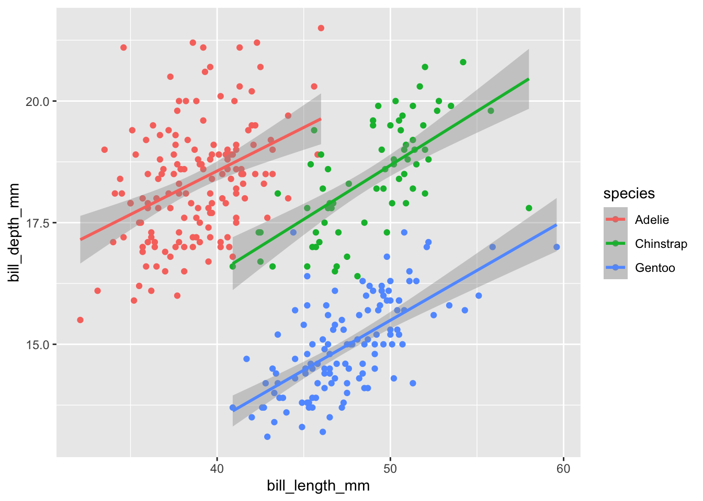

Code
install.packages("palmerpenguins") #Data
install.packages("tibble") #Data handling
install.packges("ggplot2") #Plotting
install.packages("dplyr")Simpson’s Paradox bezeichnet ein statistische Phänomen, in dem die Daten eine hierarchisch angeordnete Struktur aufweisen. Die Analyse der Daten kann deshalb auf unterschiedliche Ebenen dieser Sturktur gemacht werden und Einfluss auf das Resultat haben. Teilweise kann wird dadurch die Interpretation der Forschungsfrage beeinflusst je nach untersuchten Ebenen. Simpson’s Paradox wird oft verwendet um die Vorteile von Linear Mixed Effects Model im Vergleich zur einfacher linearen Regression darzustellen.
Beispiele sind:
Beispiele sind:
Daten (Gorman (2014)):
Die Daten wurden von Dr Allison Horst, Alison Hill und Kristen Gorman zu einem R Packet palmerpenguins verarbeitet. Das folgende Projekt basiert auf dem Turtorial von Silvia Canelon.
Zuerst, R Packete installieren
install.packages("palmerpenguins") #Data
install.packages("tibble") #Data handling
install.packges("ggplot2") #Plotting
install.packages("dplyr")Packete laden
Attache Paket: 'dplyr'Die folgenden Objekte sind maskiert von 'package:stats':
filter, lagDie folgenden Objekte sind maskiert von 'package:base':
intersect, setdiff, setequal, union# A tibble: 6 × 8
species island bill_length_mm bill_depth_mm flipper_l…¹ body_…² sex year
<fct> <fct> <dbl> <dbl> <int> <int> <fct> <int>
1 Adelie Torgersen 39.1 18.7 181 3750 male 2007
2 Adelie Torgersen 39.5 17.4 186 3800 fema… 2007
3 Adelie Torgersen 40.3 18 195 3250 fema… 2007
4 Adelie Torgersen NA NA NA NA <NA> 2007
5 Adelie Torgersen 36.7 19.3 193 3450 fema… 2007
6 Adelie Torgersen 39.3 20.6 190 3650 male 2007
# … with abbreviated variable names ¹flipper_length_mm, ²body_mass_gVon Interesse sind bill_length_mm (Schnabel) und flipper_length_mm (Flügel) 
ggplot(data = penguins,
aes(x = sex, y = body_mass_g))+
geom_boxplot(aes(fill = species))
Die Boxplotte deuten darauf hin, dass bei Gentoo ein geschlechtsspezifischer Unterschiedlich im Body Mass zu sehen ist, wobei dies möglicherweise nicht der Fall ist bei Adelie und Chinstrap.
# A tibble: 344 × 3
species sex body_mass_g
<fct> <fct> <int>
1 Gentoo male 6300
2 Gentoo male 6050
3 Gentoo male 6000
4 Gentoo male 6000
5 Gentoo male 5950
6 Gentoo male 5950
7 Gentoo male 5850
8 Gentoo male 5850
9 Gentoo male 5850
10 Gentoo male 5800
# … with 334 more rows`summarise()` has grouped output by 'species'. You can override using the
`.groups` argument.# A tibble: 8 × 3
# Groups: species [3]
species sex mean
<fct> <fct> <dbl>
1 Adelie female 3369.
2 Adelie male 4043.
3 Adelie <NA> NA
4 Chinstrap female 3527.
5 Chinstrap male 3939.
6 Gentoo female 4680.
7 Gentoo male 5485.
8 Gentoo <NA> NA `summarise()` has grouped output by 'species', 'sex'. You can override using
the `.groups` argument.# A tibble: 8 × 4
# Groups: species, sex [8]
species sex n_species n
<fct> <fct> <int> <int>
1 Adelie female 152 73
2 Adelie male 152 73
3 Adelie <NA> 152 6
4 Chinstrap female 68 34
5 Chinstrap male 68 34
6 Gentoo female 124 58
7 Gentoo male 124 61
8 Gentoo <NA> 124 5# A tibble: 8 × 4
species sex n n_species
<fct> <fct> <int> <int>
1 Adelie female 73 152
2 Adelie male 73 152
3 Adelie <NA> 6 152
4 Chinstrap female 34 68
5 Chinstrap male 34 68
6 Gentoo female 58 124
7 Gentoo male 61 124
8 Gentoo <NA> 5 124# A tibble: 8 × 5
species sex n n_species prop
<fct> <fct> <int> <int> <dbl>
1 Adelie female 73 152 48.0
2 Adelie male 73 152 48.0
3 Adelie <NA> 6 152 3.95
4 Chinstrap female 34 68 50
5 Chinstrap male 34 68 50
6 Gentoo female 58 124 46.8
7 Gentoo male 61 124 49.2
8 Gentoo <NA> 5 124 4.03# A tibble: 2 × 5
species sex n n_species prop
<fct> <fct> <int> <int> <dbl>
1 Chinstrap female 34 68 50
2 Chinstrap male 34 68 50# A tibble: 344 × 9
species island bill_length_mm bill_d…¹ flipp…² body_…³ sex year year_…⁴
<fct> <fct> <dbl> <dbl> <int> <int> <fct> <int> <fct>
1 Adelie Torgersen 39.1 18.7 181 3750 male 2007 2007
2 Adelie Torgersen 39.5 17.4 186 3800 fema… 2007 2007
3 Adelie Torgersen 40.3 18 195 3250 fema… 2007 2007
4 Adelie Torgersen NA NA NA NA <NA> 2007 2007
5 Adelie Torgersen 36.7 19.3 193 3450 fema… 2007 2007
6 Adelie Torgersen 39.3 20.6 190 3650 male 2007 2007
7 Adelie Torgersen 38.9 17.8 181 3625 fema… 2007 2007
8 Adelie Torgersen 39.2 19.6 195 4675 male 2007 2007
9 Adelie Torgersen 34.1 18.1 193 3475 <NA> 2007 2007
10 Adelie Torgersen 42 20.2 190 4250 <NA> 2007 2007
# … with 334 more rows, and abbreviated variable names ¹bill_depth_mm,
# ²flipper_length_mm, ³body_mass_g, ⁴year_factorggplot(data = penguins,
aes(x = bill_length_mm, y = bill_depth_mm))+
geom_point() +
geom_smooth(method='lm', formula = y ~x)penguins %>%
ggplot(aes(x = bill_length_mm, y = bill_depth_mm, group = species, col = species)) +
geom_point() +
geom_smooth(method = 'lm', formula = y ~x)
More information on mixed-effects models and simpson’s paradox (see Hox, Moerbeek, and Van de Schoot 2017)